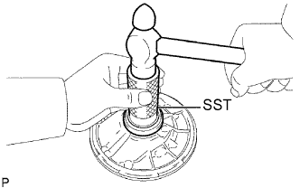
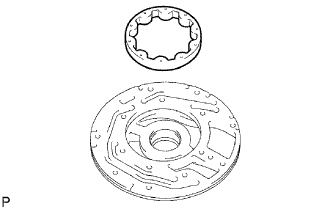
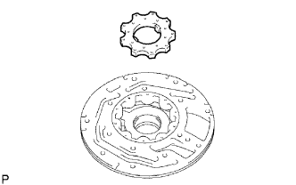
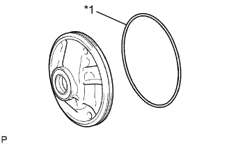
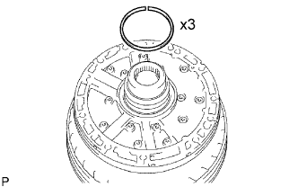
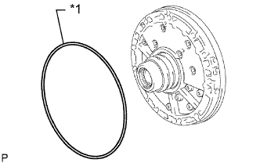

МАСЛЯНЫЙ НАСОС > ПОВТОРНАЯ СБОРКА |
| 1. УСТАНОВИТЕ САЛЬНИК ПЕРЕДНЕГО МАСЛЯНОГО НАСОСА |
|  |
С помощью SST и молотка установите новый сальник.
Покройте кромку сальника универсальной консистентной смазкой.
| 2. ЗАФИКСИРУЙТЕ КОРПУС ПЕРЕДНЕГО МАСЛЯНОГО НАСОСА В СБОРЕ |
Поместите корпус масляного насоса на муфту гидротрансформатора.
| 3. УСТАНОВИТЕ ВЕДОМУЮ ШЕСТЕРНЮ ПЕРЕДНЕГО МАСЛЯНОГО НАСОСА |
|  |
Смажьте ведомую шестерню трансмиссионной жидкостью.
Установите ведомую шестерню на корпус масляного насоса.
| 4. УСТАНОВИТЕ ВЕДУЩУЮ ШЕСТЕРНЮ ПЕРЕДНЕГО МАСЛЯНОГО НАСОСА |
|  |
Смажьте ведущую шестерню трансмиссионной жидкостью.
Установите ведущую шестерню на корпус масляного насоса.
| 5. УСТАНОВИТЕ КОЛЬЦЕВОЕ УПЛОТНЕНИЕ КОРПУСА ПЕРЕДНЕГО МАСЛЯНОГО НАСОСА |
|  |
Покройте новое кольцевое уплотнение трансмиссионной жидкостью и установите его на корпус масляного насоса.
| *1 | Новое кольцевое уплотнение |
| 6. УСТАНОВИТЕ ВАЛ СТАТОРА В СБОРЕ |
 |
Совместите болтовые отверстия вала статора с болтовыми отверстиями в корпусе масляного насоса и установите вал статора в корпус масляного насоса.
Вверните 14 болтов.
| 7. УСТАНОВИТЕ МАСЛОУПЛОТНИТЕЛЬНОЕ КОЛЬЦО БАРАБАНА МУФТЫ |
|  |
Покройте 3 новых маслоуплотнительных кольца трансмиссионной жидкостью.
Сожмите концы 3 маслоуплотнительных колец настолько, чтобы длина перекрывающего участка не превышала 8 мм (0,314 дюйма), а затем установите их в канавку вала стартера.
| 8. ПРОВЕРЬТЕ ВРАЩЕНИЕ ВЕДУЩЕЙ ШЕСТЕРНИ МАСЛЯНОГО НАСОСА |
 |
Поместите корпус масляного насоса на муфту гидротрансформатора.
Убедитесь, что ведущая шестерня вращается плавно.
Снимите масляный насос в сборе с муфты гидротрансформатора.
| 9. УСТАНОВИТЕ КОЛЬЦЕВОЕ УПЛОТНЕНИЕ КАРТЕРА АВТОМАТИЧЕСКОЙ ТРАНСМИССИИ |
|  |
Покройте новое кольцевое уплотнение трансмиссионной жидкостью и установите его на масляный насос в сборе.
| *1 | Новое кольцевое уплотнение |